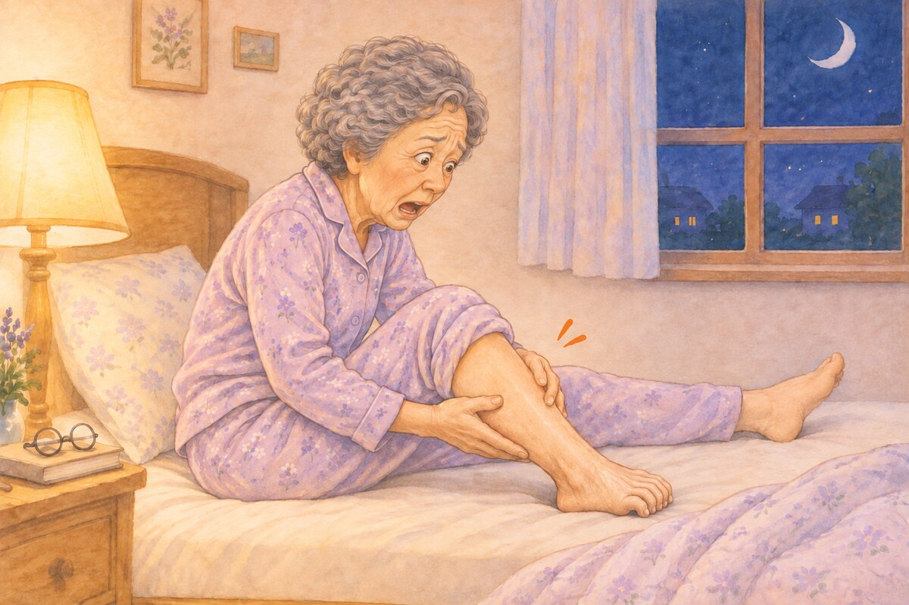
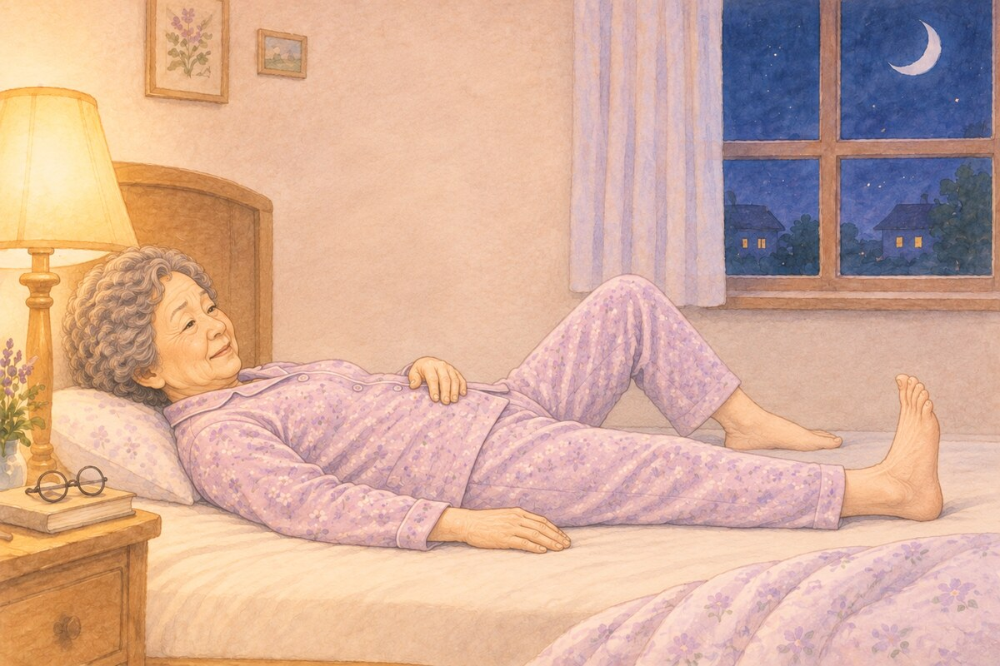
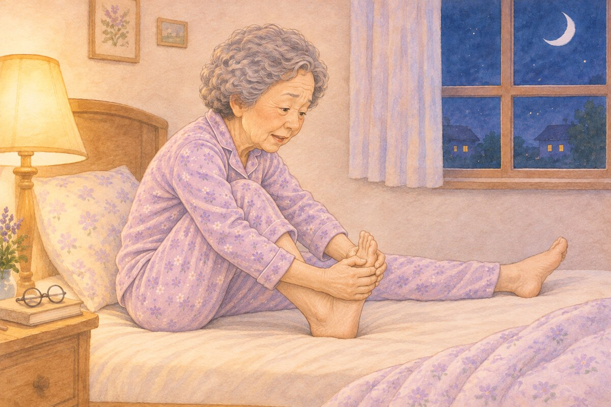
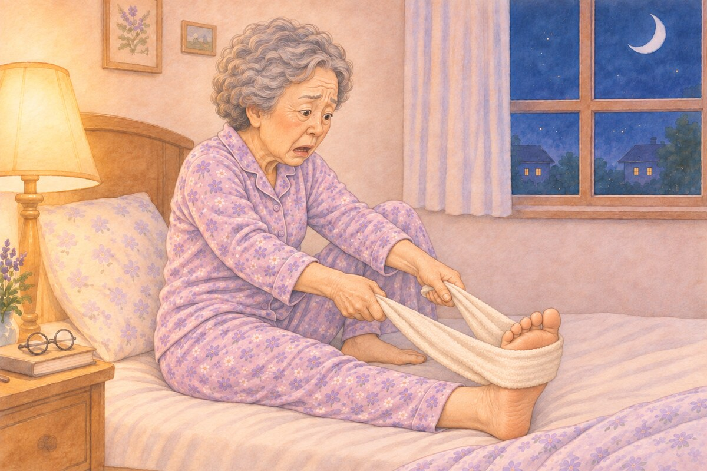
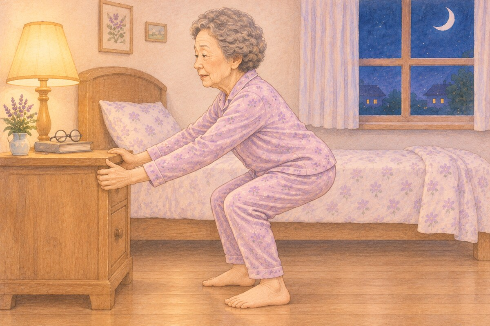
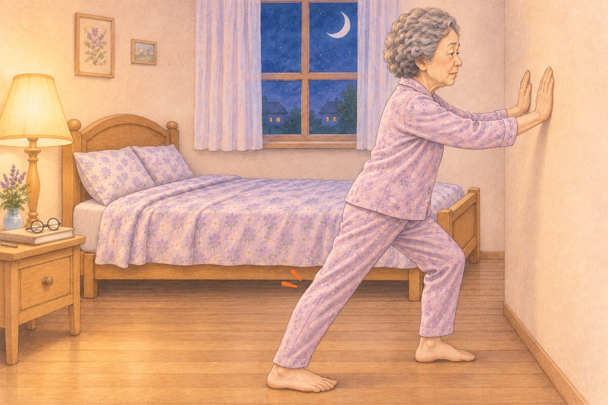

자다가 종아리에 쥐가 나요 (야간 하지 경련의 원인과 대처법)
이 글에서 알 수 있는 내용
- 밤에 종아리에 쥐가 나는 이유와 잘 생기는 조건
- 그냥 쥐인지, 중풍 등 다른 병인지 구별하는 법
- 쥐가 났을 때 대처법, 예방 스트레칭, 한의 치료

"어젯밤 자다가 종아리에 쥐가 나고, 발가락까지 뒤틀려서 너무 고통스러웠어요."
"아침에 침대에서 기지개 켜다가 종아리에 쥐가 나서 한참 고생했어요."
가끔 이런 증상으로 한의원을 찾아주시는 어르신들이 있습니다.
그리고 가끔 이런 걱정을 하시기도 합니다.
"원장님, 혹시 이러다 풍(風) 오는 건 아니죠?"
먼저 결론부터 말씀드리면, 전형적인 야간 다리 경련 자체를 중풍(뇌졸중)의 전조로 보지는 않습니다.
안심하셔도 됩니다.^^
야간 하지 경련이란?
이 증상의 정확한 의학 용어는 야간 하지 경련(Nocturnal Leg Cramps)입니다.
국제수면장애분류(ICSD-3)에서는 수면 관련 다리 경련(Sleep-related Leg Cramps)이라 부릅니다.
(하지 = 다리, 경련 = 근육이 저절로 오그라드는 것)
생각보다 아주 흔해서, 연구에 따라 50세 이상 성인의 약 3분의 1까지 경험하는 것으로 보고됩니다.1
왜 하필 밤에, 왜 하필 종아리일까요?
야간 다리 경련은 뚜렷한 원인을 찾지 못하는 경우가 많으며, 신경의 과흥분과 나이에 따른 근육·힘줄의 변화 등이 관련됩니다.2
여기에 생활 습관도 영향을 줍니다. 종아리는 걸을 때마다 다리의 피를 심장 쪽으로 짜 올려 '제2의 심장'이라고도 불리는데요, 오래 앉아 있거나 활동이 줄면 종아리 근육이 굳기 쉽습니다.
쥐를 더 잘 부르는 조건들을 살펴보겠습니다.
- 나이나이가 들면 근육과 힘줄이 조금씩 짧아지고 단단해집니다. 활동량이 줄고 오래 앉아 계신 분일수록 더 그렇습니다.
- 자는 자세누워 있을 때 발끝은 자연스럽게 아래로 처지고, 이불 무게까지 더해져 종아리 근육이 밤새 짧아진 채로 있게 됩니다. 이 상태에서 기지개를 켜며 발끝을 쭈욱 뻗으면 짧아진 근육이 더 오그라들면서 쥐가 납니다. 아침 기지개에 쥐가 잘 나는 이유가 바로 이것이죠.
- 드시는 약혈압약 중 이뇨제, 천식·폐질환에 쓰는 흡입형 장시간 작용 베타₂작용제는 다리 경련을 잘 일으키는 것으로 보고되어 있습니다.2
- 함께 있는 병당뇨병, 만성 신장질환, 간질환, 하지정맥류, 말초동맥질환, 허리 디스크·척추관협착증, 물을 적게 드시는 습관(탈수)
※ 약을 바꾼 뒤 쥐가 자주 난다면 처방한 선생님께 꼭 말씀드리세요. 임의로 끊으시면 안 됩니다.
[한의학에서는 이렇게 봅니다]
한의학에서는 쥐가 나는 것을 근맥구련(筋脈拘攣)이라 합니다.
(힘줄 근, 끌어당길 구, 경련할 련 = 근육과 힘줄이 오그라듦)
근육은 피(血)와 진액이 촉촉하게 적셔 주어야 부드럽게 움직입니다.
나이가 들어 혈이 부족해지거나(혈허 血虛), 차가운 기운이 들어오면(한사 寒邪) 근육이 마른 가지처럼 뻑뻑해지고 쉽게 당기게 됩니다.
쥐일까, 다른 병일까?
야간 하지 경련은 특징이 아주 뚜렷합니다.
- 자다가 또는 새벽에 갑자기 종아리가 돌처럼 단단하게 뭉칩니다.
- 숨이 멎을 만큼 심한 통증이 옵니다. 발가락이 오그라들거나 뒤틀리기도 합니다.
- 주로 종아리와 발에 생기고, 허벅지는 드뭅니다.
- 대개 몇 초에서 몇 분, 길면 10분 정도 지나 풀립니다.1
- 풀린 뒤에도 몇 시간에서 하루 정도 뻐근하게 아플 수 있습니다.
한마디로 "갑자기, 종아리가, 아프게 뭉쳤다가, 금방 풀린다"면 쥐입니다.
[중풍(뇌졸중)·하지불안증후군과는 이렇게 다릅니다]
중풍은 근육이 뭉치는 것이 아니라, 뇌혈관 문제로 한쪽 몸의 힘·감각·말·시야 등에 갑자기 이상이 생기는 병입니다.
비슷해 보이는 하지불안증후군까지 함께 비교해 보겠습니다.3
| 구분 | 느낌 | 부위·시간 |
|---|---|---|
| 쥐 (야간 하지 경련) | 돌처럼 뭉치고 심하게 아픔, 근육이 단단하게 만져짐 | 종아리·발 몇 초~10분 뒤 풀림 |
| 하지불안증후군 | 벌레 기어가듯 근질근질, 자꾸 움직이고 싶음 | 양쪽 다리 움직이면 잠시 나아짐 |
| 중풍 (뇌졸중) | 한쪽 팔다리 힘이 빠지거나 감각이 둔해짐, 말이 어눌해지거나 얼굴 한쪽이 처짐, 시야·균형 이상 | 한쪽 팔다리·얼굴 잠깐 나타났다가 좋아지기도 함(일과성 허혈발작) |
[이럴 땐 그냥 쥐가 아닐 수 있습니다]
대부분은 걱정하지 않으셔도 되지만, 아래의 경우는 미루지 말고 검사를 받으셔야 합니다.
- 한쪽 다리가 붓고 붉어지며 뜨끈할 때다리 혈전(심부정맥 혈전증)일 수 있습니다. 당일 병원에 가세요.
- 걸을 때마다 종아리가 아프고, 쉬면 나아질 때다리 혈관이나 허리 신경을 확인해야 합니다.
- 다리 힘이 약해지거나 근육이 빠질 때, 쥐가 낮에도 매일 나고 팔·배에도 날 때신경·근육 질환 검사가 필요합니다.
- 한쪽 팔다리에 힘이 빠지거나, 얼굴이 한쪽으로 처지거나, 말이 갑자기 어눌해지거나, 시야·균형에 이상이 생길 때중풍의 신호입니다. 잠시 후 좋아지더라도 바로 119에 연락하세요.
쥐가 났을 때 대처법 – 발끝을 몸 쪽으로!
야간 하지 경련은 목숨을 위협하거나 다른 큰 병으로 이어지는 병은 아닙니다.
다만 잘 되풀이되고, 잠을 설치게 해서 낮 컨디션까지 떨어뜨리는 것이 문제입니다.
쥐가 난 근육은 반대로 늘려 주면 풀립니다.
[방법 1] 누운 채로 발끝 젖히기
누운 채로 발끝을 스스로 몸 쪽으로 젖힙니다. 손을 쓰지 않아도 되고, 정강이 앞쪽 근육에 힘을 주면 종아리 근육이 풀리는 데 도움이 됩니다.

[방법 2] 무릎을 굽힌 채 손으로 당기기
손이 발끝에 닿지 않으면 무릎을 굽힌 채 손으로 발끝을 몸 쪽으로 당기고, 당긴 채로 무릎을 조금씩 폅니다.

[방법 3] 수건 이용해서 당기기
무릎을 편 상태에서 수건을 발바닥 앞부분에 걸고, 양 끝을 잡아 발끝이 정강이 쪽으로 향하도록 천천히 당깁니다.

- 반동을 주거나 통증을 참으며 세게 당기지는 마세요.
- 풀리기 시작하면 종아리를 위로 쓸어 올리듯 부드럽게 주물러 줍니다.
- 따뜻한 수건이나 찜질로 근육을 데워 주면 남은 뻐근함이 줄어듭니다.
[방법 4] 지지대 잡고 쪼그려 앉기
아래 그림처럼 쪼그려 앉는 동작으로도 종아리를 늘릴 수 있습니다.

이때는 뒤꿈치를 바닥에 붙인 채 발목이 굽혀져야 합니다.
무릎을 굽힌 자세는 종아리 깊은 쪽 근육을 늘리는 데 도움이 됩니다.
※ 다만 어르신은 깊이 앉다가 넘어지거나 무릎이 아플 수 있습니다. 고정된 지지대를 잡고 가능한 범위에서만 움직이세요. 무릎이 불편하거나 균형 잡기가 어렵다면 침대에서 하는 방법이 낫습니다.5
쥐가 나지 않게 – 생활 수칙
- ① 자기 전 종아리 스트레칭벽을 양손으로 짚고 한 발을 뒤로 빼서,
뒤쪽 무릎은 펴고
뒤꿈치를 바닥에 붙인 채 30초 버팁니다.
양쪽 3번씩, 약 3분이면 충분합니다.

스트레칭의 예방 효과는 연구마다 결과가 조금씩 다르지만2, 집에서 쉽게 할 수 있는 방법이니 무리하지 않는 범위에서 꾸준히 해 보시길 권합니다.^^
- ② 발을 따뜻하고 편하게수면양말로 발과 종아리를 따뜻하게 하고, 이불 발치는 널널하게 두어 발끝이 눌려 아래로 처지지 않게 합니다. 자기 전 미지근한 물에 10분 족욕도 좋습니다.
- ③ 물은 낮에 충분히자기 직전에 몰아서 드시면 밤에 소변 때문에 또 깨시니, 낮 동안 나눠서 드시는 것이 요령입니다.
- ④ 낮에 걷기하루 종일 앉아 계시면 종아리 근육이 굳습니다. 가벼운 산책이라도 매일 해 주세요.
마그네슘, 드시면 나아질까요?
쥐가 나면 마그네슘부터 찾으시는 분이 많죠?
하지만 코크란 리뷰(여러 연구를 모아 종합 평가한 것)4에 따르면,
나이 들어 생기는 흔한 다리 경련에서는 마그네슘의 뚜렷한 예방 효과가 확인되지 않았습니다.
다만 혈액 검사에서 전해질 부족이 확인되면, 부족한 성분과 원인에 맞춰 치료해야 합니다.
한의원에서는 이렇게 치료합니다
한방 치료는 '쥐가 난 근육을 풀어 주는 것'과 '쥐가 잘 나는 몸 상태를 살피는 것' 두 가지를 함께 합니다.
[부항·침]
먼저 종아리에 습식부항 또는 건식부항을 시행합니다. 뭉친 근육의 긴장을 덜어 주기 위한 치료입니다.
(습식부항은 살짝 사혈한 뒤 부항을 붙이는 것, 건식부항은 부항만 붙이는 것입니다.)
그리고 근육의 긴장과 통증 완화를 목적으로 종아리 뒤쪽 근육에 침 치료를 시행합니다.
- 승산(承山)·승근(承筋)·합양(合陽)·비양(飛揚)
- 실제로 뭉쳐 눌렀을 때 아픈 자리(아시혈 阿是穴)
[한약 처방]
탕약 복용을 원하시는 분께는 혈액순환을 돕고 굳은 근육을 풀어 주는 처방을 합니다.
다음은 한의학적 관점에서 설명한 대표 약재의 전통적 활용입니다.
- 작약·감초근육의 당김을 풀어 줌 (예로부터 근육이 당기고 뭉칠 때 짝을 지어 써 온 약재입니다.)
- 당귀피를 보태고 잘 돌게 함
- 계지몸을 따뜻하게 해 혈행을 도움
- 모과다리 힘줄의 경련을 다스림
혈이 부족한 체질(혈허)이나 몸이 찬 분(한사)은 증상과 동반 질환에 맞게 약재를 가감해서 처방합니다.
급할 때는 풀어 주고, 평소에는 근육을 촉촉하게 적셔 주는 것, 이것이 한방 치료의 핵심입니다.
마치며
다시 한 번 정리해 드리겠습니다.
- 밤에 종아리에 쥐가 나는 것은 그 자체로 중풍의 전조 증상은 아닙니다.
- 쥐가 나면 발끝을 몸 쪽으로 당기세요.
- 자기 전 가볍게 종아리 스트레칭을 하시고, 이불이 발끝을 누르지 않도록 해 주세요.
- 한쪽 다리가 붓고 뜨겁거나, 한쪽 팔다리 힘이 빠지면 그냥 쥐가 아닙니다.
쥐는 잠깐이지만, 그 한 번에 밤잠을 통째로 설치게 됩니다.
나이 탓이려니 하고 넘기지 마시고, 오늘 밤부터 종아리를 한 번 늘려 주고 주무시길 바랍니다.^^
ps. 한 분이 쥐가 나서 깨면, 옆에서 주무시던 분도 같이 깨시기 마련입니다. 자기 전 스트레칭은 두 분이 함께 하시면 더 좋습니다.
한의학박사 · 한방재활의학과 전문의 박장우
참고자료
- Hallegraeff J, et al. Criteria in diagnosing nocturnal leg cramps: a systematic review. BMC Family Practice. 2017;18:29. — 50세 이상 최대 33%, 진단 특징 7가지. doi.org/10.1186/s12875-017-0600-x
- Rabbitt L, et al. A review of nocturnal leg cramps in older people. Age and Ageing. 2016;45(6):776–782. — 이뇨제·장시간형 기관지확장제, 스트레칭 근거. doi.org/10.1093/ageing/afw139
- Tipton PW, Wszołek ZK. Restless legs syndrome and nocturnal leg cramps: a review and guide to diagnosis and treatment. Polish Archives of Internal Medicine. 2017;127(12):865–872. — 하지불안증후군과의 감별. doi.org/10.20452/pamw.4148
- Moretti A. What is the role of magnesium for skeletal muscle cramps? A Cochrane Review summary with commentary. J Musculoskelet Neuronal Interact. 2021;21(1):1–3. — 마그네슘 효과. pubmed.ncbi.nlm.nih.gov/33657750
- American Academy of Orthopaedic Surgeons. OrthoInfo: Foot and Ankle Conditioning Program. — 일반적인 종아리 스트레칭 자세 안내. orthoinfo.org